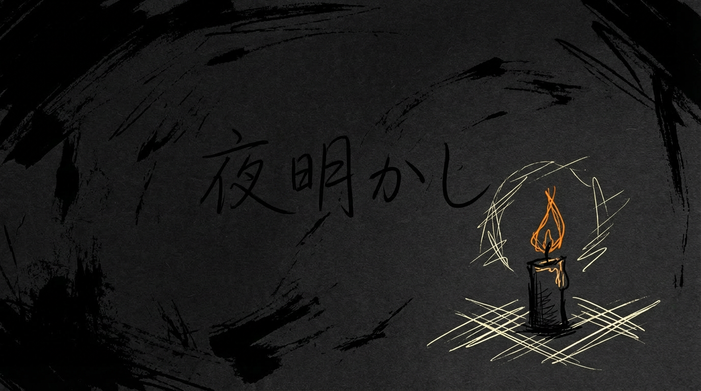

ずっとしっくりきてなかった
だいぶ昔に書いた歌詞がある。いいワード書いたと思ってた。 でも聴いた人に何を表現してる歌か伝わってない気がしてた。「恋時間」というタイトルで呼んでいたが、これ自体もしっくりきてなかった。
この歌の持っている反逆的な熱さ——おとぎ話の「おしまい」を拒否し続ける感じ——が抜けてるなあって。でもどうつければいいか思いつかなかった。
いまsunoつかえるようになって新しい音源ができた。動画を作ろうとなったとき、まずタイトルを書き込まなきゃいけない。
Claude と雑談しながらタイトルを探った。「恋昇り」「昇月」——方向は悪くないが、ださい。
ふと「村下孝蔵がつけるとしたら？」と聞いてみた。 「夜明かし」がでてきた。 全部の歌詞が夜を明かすことを歌っている。午前零時の鐘が鳴り終わっても。まだ寝かさないで。キャンドル灯して。答えは最初から決まってた。 こんだけ時間をあけてしっくりするタイトルがでたｗ
短いプロンプトが「一貫性」を生む
背景画像は Gemini 3 Pro Image（Nano Banana Pro）で生成した。ポータルサイトの Art Bible に「ラフ、手描き、3色以内」とあるので、それをそのままプロンプトにした。
rough hand-drawn sketch on dark black paper.
wobbly ink lines. Only 3 colors: black, cream-white, warm orange.これだけで、何回生成しても同じ人が描いた感じになる。構図もモチーフも毎回違うのに。Art Bible に書いてあることをそのまま英語にしただけなのに、なんで？
試しに歌詞を丸ごとプロンプトに入れてみた。完全に別の画風になった。セミリアルの絵画調、フルカラー、人物入り。夢女子アート。
プロンプトが長くなると、スタイル指示より歌詞の内容のほうが勝つ。短いキーワードのほうが画風が安定するのは、モデルに「どう描くか」の判断を委ねてるからだと思う。制約だけ渡して、あとは任せる。
Remotion で歌詞スクロール動画
動画は Remotion で組んだ。歌詞が下から上にスクロールするだけ。
いま歌ってるあたりの行だけ明るくして、離れた行は薄くした。間奏ではスクロールを止めて、歌い出しに合わせて再開。タイミングは自分で聴いて合わせた。
最後はキャンドルが消える背景にクロスフェードして、フェードアウト。背景画像を3枚生成して切り替えてるだけ。フォントは Klee One。
YouTube アップロード自動化
前回は手動でアップロードした。今回は YouTube Data API v3 でスクリプトにした。
OAuth2 のセットアップがめんどくさい。API 有効化、クライアント ID 作成、テストユーザー追加、スコープ設定、認証。アップロード用と更新用でスコープが違うのでトークン取り直しもあった。
でも一回やれば次からはコマンド一発で上がる。限定公開で上げて確認、よければ公開。
できたもの
歌詞スクロールするだけの動画。でも画像生成→動画組み立て→アップロードまで全部スクリプトで回せるようになった。次はもうちょっとちゃんとした PV を作りたい。